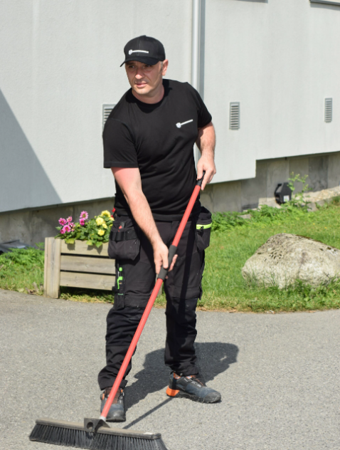

Vaktmestertjenester
Daglig drift, tilsyn, småreparasjoner, oppfølging av eiendom og praktiske oppgaver som holder alt i orden.
Karenslyst allé 1 A, 0278 Oslo
office@vaktmestersenter.noVaktmesterpartner AS hjelper borettslag, sameier, bedrifter og private med drift, tilsyn, vedlikehold og uteområder. På kort tid ble vi topprangert selskap på Mittanbud, og det gjenspeiler hvordan vi jobber: presist, ryddig og løsningsorientert.
Vi bygget tillit raskt gjennom høy kvalitet, god service og leveranser som faktisk blir fulgt opp.
Basert på anmeldelser fra kunder på Mittanbud
Topprangert på Mittanbud
Rask responstid
Profesjonelt arbeid
Konkurransedyktige priser
Tjenester
Vi har tatt utgangspunkt i hovedkategoriene fra dagens nettsted og satt dem inn i en mer moderne og oversiktlig presentasjon som er enkel å oppdatere senere.
Daglig drift, tilsyn, småreparasjoner, oppfølging av eiendom og praktiske oppgaver som holder alt i orden.
Regelmessig klipp, kantarbeid og grønt vedlikehold som gir et ryddig og profesjonelt uteområde gjennom sesongen.
Effektiv vinterberedskap med måking, strøing og rask innsats når værforholdene krever trygg fremkommelighet.
Feiing av gårdsplasser, inngangspartier og fellesområder for et rent førsteinntrykk og bedre trivsel.
Forebyggende og løpende vedlikehold som forlenger levetid, reduserer kostnader og holder standarden oppe.
Faste avtaler eller fleksible oppdrag tilpasset størrelse på eiendom, budsjett, sesong og behov.
Om oss
Vaktmesterpartner AS tilbyr profesjonelle vaktmestertjenester til sameier, borettslag og næringsbygg – med særlig fokus på Oslo og omegn. Vi sørger for at eiendommen fungerer som den skal: gjennom regelmessige inspeksjoner, praktisk vedlikehold og rask respons ved behov.
Vi er mer enn bare en tjenesteleverandør – vi er en samarbeidspartner med fokus på trygghet, forutsigbarhet og personlig oppfølging.
Daniel er deres faste kontaktperson – en trygg, kompetent og løsningsorientert ressurs som følger opp eiendommen tett. Han koordinerer og utfører arbeidet, og gir klare tilbakemeldinger gjennom avtalt rapportering og oppmøte.
Hos oss får dere én tydelig kontaktperson, rask og løsningsorientert håndtering, skreddersydde avtaler og kostnadseffektive løsninger. Målet vårt er alltid det samme: et trygt, velfungerende og velholdt bomiljø.

Oppfølging som skjer når den skal, med tydelige avtaler og ryddig gjennomføring.
Vi følger opp raskt og håndterer behov effektivt når noe må løses.
En samarbeidspartner dere kan stole på i den daglige driften av eiendommen.
Reviews
Ekte tilbakemeldinger fra kunder som har brukt Vaktmesterpartner AS gjennom vår profil på Mittanbud.
Montering av Pax-skap og demontering av veggkuber
"Veldig hyggelig og profesjonelt!"
Santino 13. mars 2026Bytte skapdører og topp-plate på baderomsskap
"God kvalitet og kommunikasjon. Anbefales!"
Ivar 10. mars 2026Montering av hylle på flislagt kjøkkenvegg
"Daniel did an excellent job. Was tidy and walked me through the job as he was doing it. Will 100% use them again."
William 20. februar 2026Montering av skapdører på badet
"Veldig enkel kommunikasjon og høy kvalitet på jobben."
Andreas 12. februar 2026Montering av kommode, sofabord og to speil
"Veldig nøyaktig, rask og serviceminded. Kan trygt anbefales."
Kristin 8. februar 2026Montering av vegghengt tørkestativ på flisvegg
"Veldig fornøyd! God kommunikasjon gjennom hele prosessen. Han stilte opp på kort varsel og utførte arbeidet med nøyaktighet."
Malin 31. januar 2026Sparkling og maling av vegger
"Veldig profesjonelt, alt fra dialog, oppmøte og gjennomføring. Fint resultat!"
Stian 20. november 2025Feste av gardinstang
"Veldig bra utført jobb. God kommunikasjon underveis, veldig hjelpsom og holdt meg oppdatert hele tiden."
Jakub 26. august 2025Vi tilbyr vaktmestertjenester for borettslag, sameier, bedrifter og private i Oslo og nærliggende områder.
Oslo • Bærum • Lørenskog • Lillestrøm • Nordstrand
Kontakt oss
Firma: Vaktmesterpartner AS
Adresse:
Karenslyst allé 1 A
0278 Oslo
Telefon:
952 15 170
486 12 641
E-post:
office@vaktmestersenter.no
Åpningstider:
Mandag - Fredag: 08:00 - 18:00